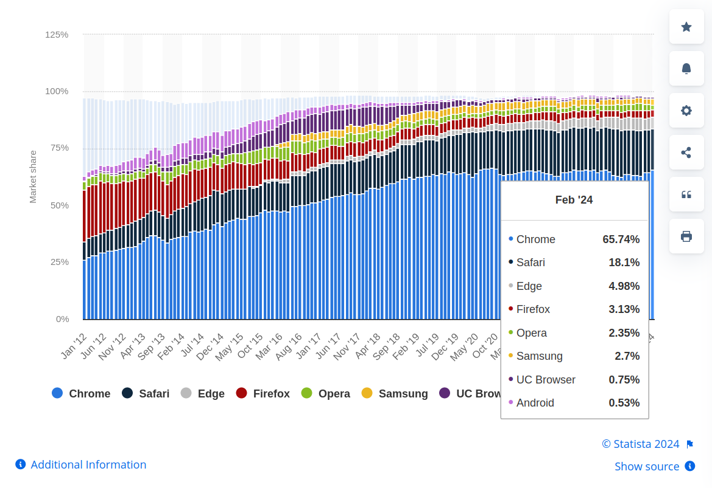
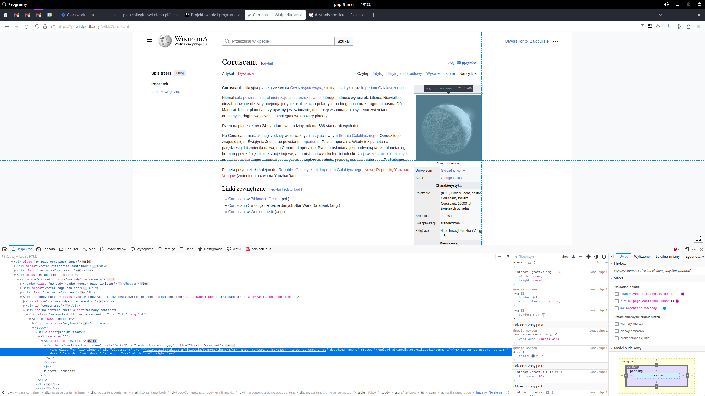
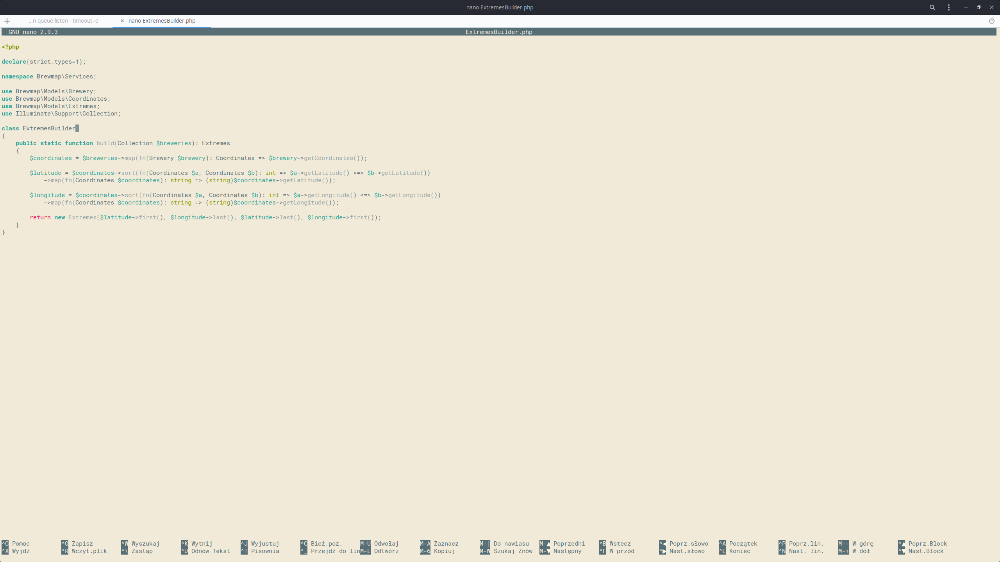
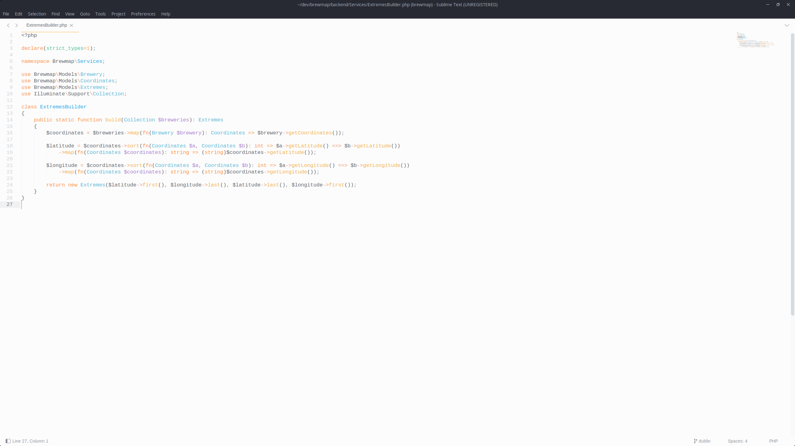
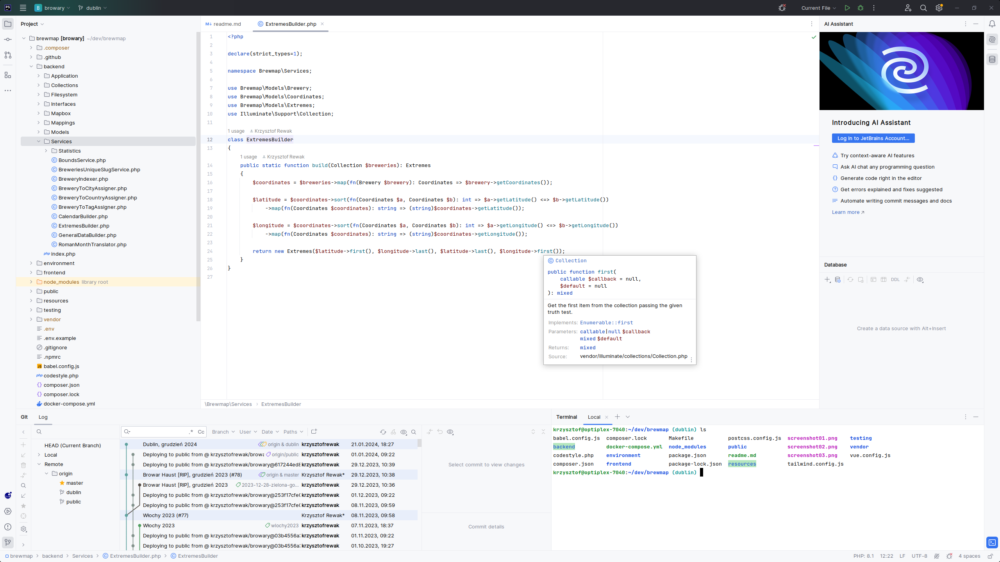
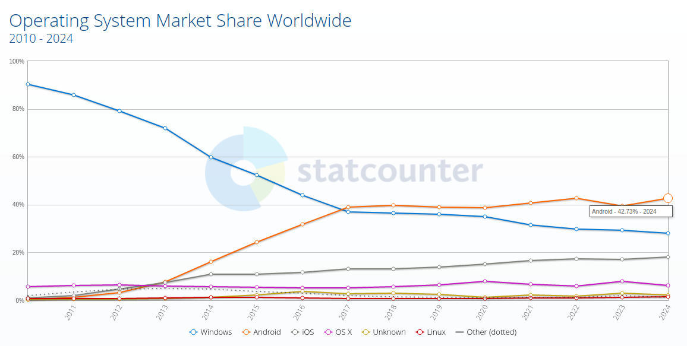
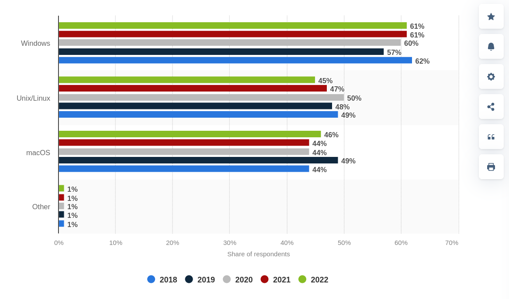

Narzędzia deweloperskie
Projektowanie i programowanie systemów internetowych I
wykład 3 z 15

mgr inż. Krzysztof Rewak
Zakład Informatyki, Wydział Nauk Technicznych i Ekonomicznych
Collegium Witelona Uczelnia Państwowa
Blumilk sp. z o.o.
Agenda
- Przeglądarki internetowe
- Edytory i IDE
- Systemy operacyjne i środowisko
- Inne przydasie
- Podsumowanie
Czym jest przeglądarka internetowa?
Przeglądarka internetowa (ang. web browser) – program komputerowy służący do pobierania i wyświetlania stron internetowych udostępnianych przez serwery WWW, a także odtwarzania plików multimedialnych. [1]
Dlaczego jest to istotne?
Niestety każda przeglądarka będzie działała nieco inaczej. Poza oczywistościami takimi jak różnorakie funkcjonalności czy wygląd, różnią się też silnikiem renderowania, co w szczególności będzie odpowiadało za różnice w interpretacji drzewa DOM, arkuszy CSS czy skryptów Javascript.
Chrome, Opera, Vivaldi i Edge korzystają z silnika Blink. Safari (i stare Chrome) z WebKita, Firefox - z Gecko. Będzie to szczegółnie uciążliwe dla frontendowców, kiedy trzeba będzie przewidzieć jak dane komponenty mogą wyglądąć i działać w różnych przeglądarkach.

udział przeglądarek w rynku na przestrzeni ostatnich lat
Która jest najlepsza?
Tutaj już oczywiście należy rozpatrywać takie pytanie w kontekście prywatnych upodobań. Warto jednak mieć przynajmniej ze trzy przeglądarki zainstalowane na swoim komputerze.
Ale ważne jest dla nas to, co znajdziemy pod spodem
Podstawowym narzędziem inżynierskim jest możliwość podejrzenia źródła strony.
Ctrl+U (albo ⌘ + ⌥ + U) zazwyczaj pokaże nam zwrotkę serwera, która otrzymujemy po wysłaniu zapytania na adres podany w pasku adresu. Czasami będzie to miało sens, a czasami niestety nie.
Narzędzia deweloperskie
O wiele ciekawszym oknem są tzw. narzędzia deweloperskie czy też devtools, które w każdej przeglądarce wyglądają nieco inaczej, ale generalnie spełniają zawsze ten sam cel.
F12 (albo ⌘ + ⌥ + I, ablo Ctrl + Shift + I) powinno uruchomić to w większości przeglądarek.

Inspektor jest wygodnym narzędziem do analizy drzewa DOM
(tutaj zrobimy przegląd kolejnych funkcji na żywo)
- sensowne użycie Inspektora
- podręczny edytor CSS
- konsola JS
- debuger
- sieć, czyli możliwość podglądania co się dzieje na warstwie HTTP
- dane
W czym kodzić?
Jeżeli chcemy przelać nasze myśli na kod, mamy do wyboru tak naprawdę dwie (trzy?) opcje: edytory tekstu (w CLI i graficzne) oraz IDE.
Edytory w CLI
- szybkie
- praktycznie zawsze dostępne
- mogą być trudne do opanowania
- mogą być potężne poprzez konfigurowalność

Edytor tekstu GNU nano
Edytory wizualne
- to samo, co edytory w CLI, ale tym razem też przy użyciu myszki
- dobrze sobie radzą z dużymi plikami
- z grubsza rozumieją co w nich piszemy
- warto znać ich liczne funkcjonalności i skróty klawiszowe (tutaj zrobimy sobie live coding)

Edytor tekstu Sublime Text
Integrated development environment
- pełny pakiet narzędzi inżynierskich
- skonstruowane specjalnie do wytwarzania oprogramowania
- w dużej mierze standardy branżowe
- mogą być drogie

IDE PHPStorm
Jaki system operacyjny jest najlepszy?
Nie da się obiektywnie tego powiedzieć. Windows, macOS i różne dystrybucje Linuksa mają swoje zalety i wady. Grunt to wiedzieć jakie mamy potrzeby i możliwości.

udział systemów operacyjnych w rynku w kontekście korzystania z klientów webowych na przestrzeni ostatnich lat

udział systemów operacyjnych w rynku w kontekście pracy prorgamistów na przestrzeni ostatnich lat
Wirtualizacja i konterneryzacja
Warto natomiast zastanowić się czy chcemy instalować bezpośrednio w systemie wszystkie potrzebne do projektów narzędzia, kompilatory, interpretery czy systemy zarządzania zależnościami. Wirtaualizacja (VirtualBox, Vagrant) i konteneryzacja (Docker) mogą wyglądać na skomplikowane, ale w dalszej perspektywie są niezastąpionymi narzędziami.
Terminal
Nawet jeżeli pracujecie w okienkach i panicznie boicie się konsoli, warto mieć pod ręką dobry terminal. I to nie taki, który utrudnia życie, ale taki, który wszystko przyspiesza i automatyzuje.
Mój faworyt: cokolwiek na uniksach lub Cmder (na Windowsie).
Klient SQL
Jeżeli Wasze IDE nie ma sensownego wsparcia do zarządzania bazą danych, warto zainteresować się czymś innym. Dobre oprogramowanie tego typu powinno być lekkie, umożliwiać podgląd danych, wpisywanie kwerend oraz sensowne modyfikowanie z podglądu w formie tabelarycznej.
Mój faworyt: IDE JetBrains lub HeidiSQL (na Windowsie).
Klient gita
Istnieje mnóstwo narzędzi ułatwiajacych pracę z gitem. Git pull i push są proste do wyklikania w konsoli, ale bardziej skomplikowane akcje czasami dobrze móc po prostu wyklikać. Istnieje mnóstwo dedykowanego oprogrampowania, ale warto wybrać takie, które jak najmniej ingeruje w naszą pracę.
Mój faworyt: IDE JetBrains lub git w terminalu.
Klient http
Wysyłanie zapytań HTTP i badanie ich odpowiedzi to jedno z podstawowych zadań towarzyszących programowaniu systemów internetowych. Warto umieć korzystać z narzędzia, które zapamięta nasze poprzednie zapytania oraz umożliwi manipulowanie nagłówkami i ciałem zapytania.
Mój faworyt: Postman lub Insomnia.
Narzędzia AI
W dzisiejszych czasach zaraz nie będzie można sensownie pracować bez wspomagania się sztuczną inteligencją. Nie powinniśmy korzystać z tych narzędzi na zasadzie "zrób wszystko za mnie", ale raczej jako pomoc przy całym procesie.
Mój faworyt: GitHub Copilot i Chat GPT.
Highlights
- znalezienie dobrych narzędzi to może nie aż połowa, ale jakaś część sukcesu
- warto dostosować swoje narzędzia do swojego stacku technologicznego
- nie warto się kopać z koniem i używać nieefektywnych czy starych narzędzi ze względu na to, że są domyślnie instalowane w systemie lub je znamy z poprzednich etapów edukacji
- wszystko jest oczywiście podatne na takie zjawiska jak moda, więc warto raz na jakiś czas odświeżyć swoje przyzwyczajenia
- bez narzędzi klasy enterprise trudno zbudować projekt klasy enterprise (co nie znaczy, że się nie da)
Źródła i do dalszego poczytania